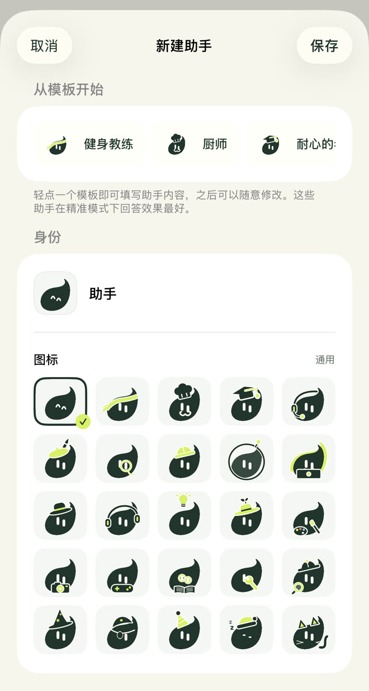
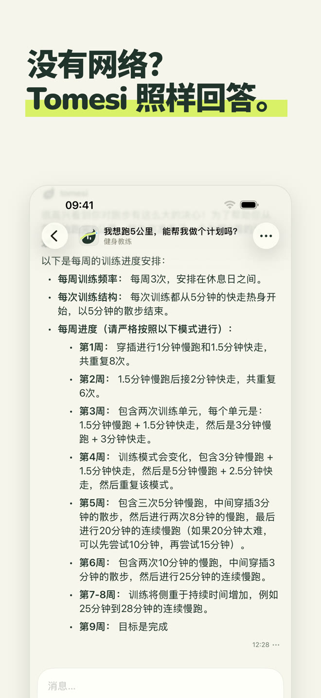
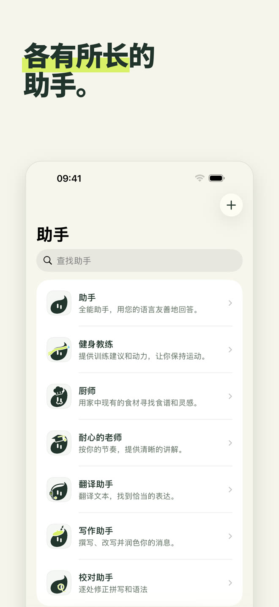
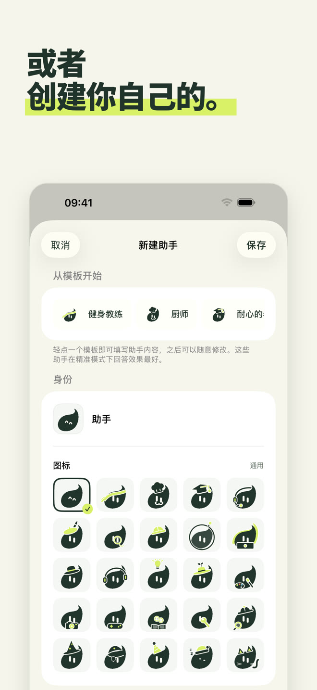
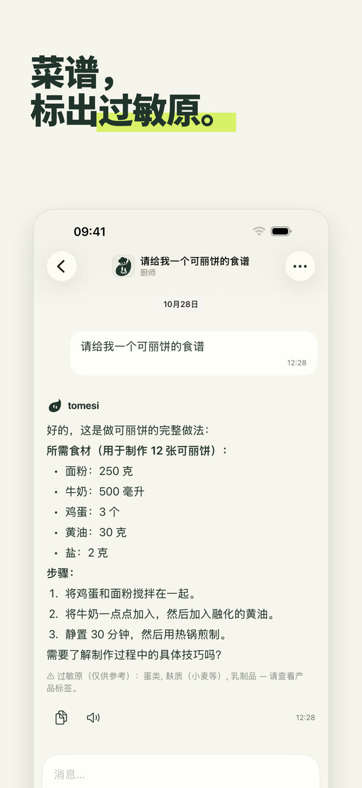
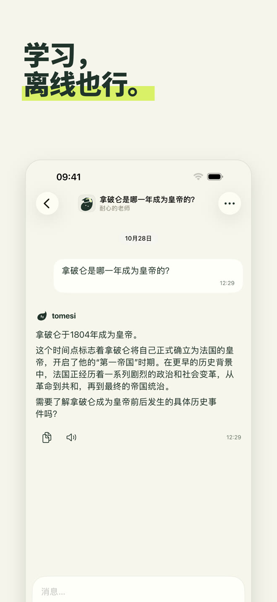
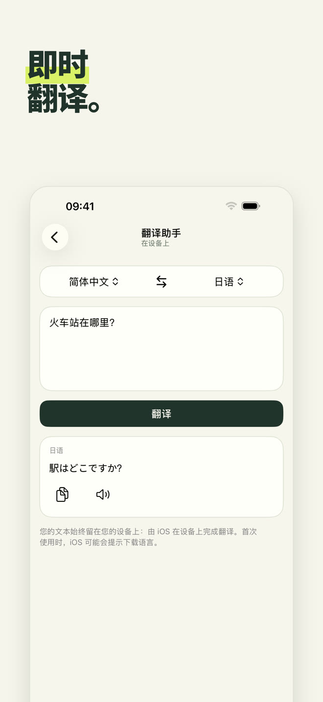
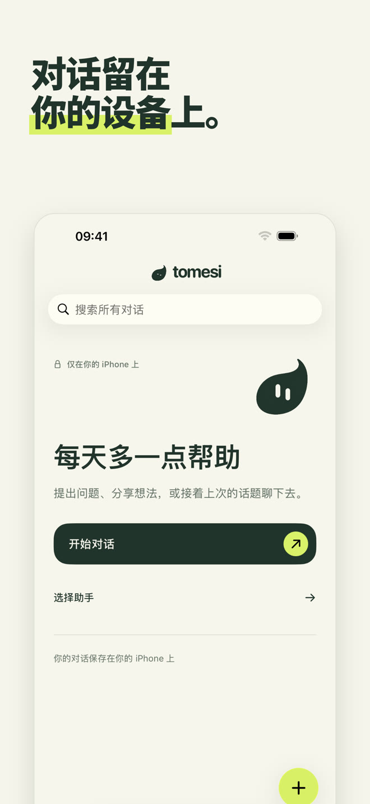

完全本地运行的 AI 助手：在飞机上、山里、国外，它都在你的 iPhone 上运行。你写下的内容永远不会离开手机。
在 App Store 下载一次购买 · 无需账户 · 没有订阅
每位助手都有自己的角色和回答方式。选一位能帮到你的，或者直接和全能助手聊天。
全能助手，用你的语言友好地回答。
根据你的时间和器材安排训练，按周制定计划。
用你手边的食材做简单的菜，并标出过敏原。
按你的节奏一步步讲解：数学、历史、科学、语法。
在 13 种语言之间即时翻译。
邮件、消息、信件；还能逐个改正错别字。
给它起个名字、设定性格，再从 Tomesi 的 25 个图标中选一个：一位属于你的助手，同样会用到应用里的资料卡。

小模型不可能什么都知道。Tomesi 内置经过审核的资料卡，回答时交给助手参考。
用量、步骤和过敏原，由应用显示在回答下方。
覆盖 14 个国家，另有科学、地理和 14 种语言的语法资料卡。
以及 65 张指南：多周训练计划、恢复、饮食、各类运动。
和所有 AI 一样，Tomesi 也可能出错：重要信息请自行核实。







AI 安装在你的 iPhone 上。你写下的内容不会通过互联网发送，也不会存放在别处。
不用注册，不用邮箱，没有广告，不收集数据。
没有服务器费用，所以没有订阅：应用归你所有。
可选的“精准”模式会下载一个更强的模型（约 3 GB），用于需要更细致的回答。
是的。安装好应用和助手后，Tomesi 就不再需要互联网：AI 完全在你的 iPhone 上运行。打开飞行模式就能验证。
哪里都不去。它们留在你的手机上。Tomesi 没有对话服务器、没有用户账户，也没有广告。请参阅我们的隐私政策。
ChatGPT 运行在服务器上：需要联网，对话要经过服务器。Tomesi 运行在你的 iPhone 上：不如云端巨头那样无所不知，但随时可用、完全私密，而且没有订阅。
需要 8 GB 内存的 iPhone（iPhone 15 Pro 或更新机型）及 iOS 26 或更高版本。请预留约 3 GB 可用空间，可选的“精准”模式还需要 3 GB。
会的，和所有 AI 一样。应用内置的菜谱、历史年份和资料卡都经过核对并提供给助手，能大大减少错误，但重要信息请务必核实。
Tomesi 已翻译成 13 种语言（简体中文、英语、法语、德语、西班牙语、意大利语、荷兰语、波兰语、葡萄牙语、日语、韩语、俄语……），助手能理解和回答的语言还要更多。
是的。MonIA 现已更名为 Tomesi。如果你已经购买过，无需再次购买：更新即可，你的对话仍留在手机上。